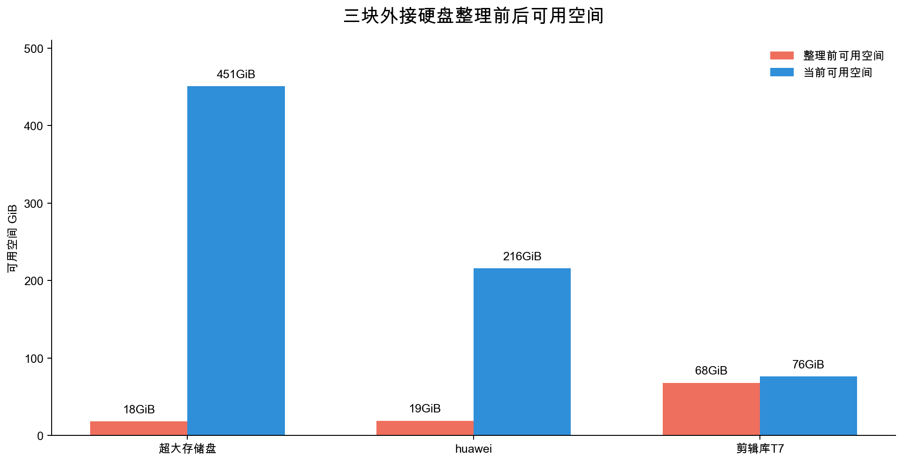
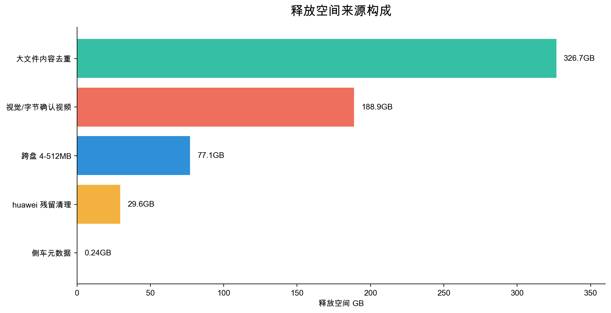

三盘盘点与保护边界建立
确认三块盘容量、角色和目录风险；生成总入口报告，保护医院/医疗/设计、工程包、Final Cut 原始媒体等路径。
一次由 AI 协助执行的本地存储治理：跨盘去重、批量重命名、目录归类、保护边界和可回滚记录。目标不是把文件“看起来变整齐”，而是降低满盘风险，让素材、工程、备份和临时区恢复可维护状态。
最直接的变化是三块盘从“接近满盘、入口混乱”进入“有余量、有分区、有审计记录”的状态。
| 硬盘 | 整理前可用空间 | 当前可用空间 | 变化 | 当前角色 |
|---|---|---|---|---|
| 超大存储盘 | 约 18GiB | 约 451GiB | 约 +433GiB | 冷归档主盘：原始素材、家庭活动、剪辑工程、AI 与电脑备份分区。 |
| huawei | 约 19GiB | 约 216GiB | 约 +197GiB | 下载与个人影音归档盘；OpenClaw 保持根目录，不迁移。 |
| 剪辑库T7 | 约 68GiB | 约 76GiB | 约 +8GiB | 剪辑工作盘；待分类已清空，后续空间重点是压缩已完成项目。 |

释放空间来自多轮策略组合：先清高置信大视频，再处理跨盘中小媒体，最后做侧车文件和下载残留清理。

每一步都保留了批次目录、CSV manifest 和可回滚脚本；删除动作只在最终确认后发生。
确认三块盘容量、角色和目录风险；生成总入口报告，保护医院/医疗/设计、工程包、Final Cut 原始媒体等路径。
只删除已视觉确认、路径低风险、并通过 cmp 的重复视频副本，共释放约 188.9GB。
安全范围普通媒体按日期与路径内容重命名 5,573 个；清理 huawei 下载残留、侧车文件和字节确认重复。
普通媒体、RAW/照片侧素材、音频和侧车文件归类；最终只剩 Final Cut 工程包。
T7 的 .fcpbundle 整包移入工程包待确认区；huawei 顶层重排为已筛选与下载暂存，OpenClaw 保持根目录。
扫描 1,680 个大媒体，最终删除 185 个 byte 完全一致副本，释放约 326.7GB。
按 64-512MB、16-64MB、4-16MB 三档处理，只清跨盘重复，不处理同盘内部重复，共释放约 77.1GB。
超大盘根目录归为 00/10/20/30/40/90 六类；“原始文件不可删除”和含问诊资料的文件目录保持原位。
核心原则是：名字相同不等于内容相同，只有 byte 完全一致才自动删除。
按盘和目录白名单收集媒体，排除医院、设计、工程包、原始不可删除区。
按文件大小分组；跨盘任务要求候选至少来自两块不同硬盘。
读取开头、中段、结尾内容做抽样 SHA256，过滤大部分同大小但不同内容文件。
对抽样命中的候选执行 cmp -s，逐字节确认。
按保留优先级保留工作盘/已整理路径，删除下载暂存或旧副本。
分类不是为了美观，而是让下一次导入、检索、备份和压缩有明确落点。
这次整理能自动推进，是因为明确了哪些地方绝不自动碰。
未参与自动删除/重命名的范围：医院、医疗、设计相关路径；Final Cut 工程包内部；Final Cut 插件、代理媒体、Original Media；标记为原始不可删除的目录；含问诊资料的文件目录。
这些是本机可追溯的主要批次名；完整 CSV 与 rollback 不发布到公网。
| 批次 | 动作 | 结果 |
|---|---|---|
| visual-confirmed-delete | 视觉 + cmp 确认视频副本 | 23 个，约 188.9GB |
| rename-safe-media | 安全范围普通媒体重命名 | 5,573 个，复扫新增 0 |
| huawei-clean | 下载残留、侧车、字节重复 | 约 29.6GB |
| classify-t7-by-date / leftovers / audio / fcpbundle | T7 待分类归档 | 普通媒体、RAW、音频、工程包归位 |
| deep-large-dedupe | 512MB 以上大媒体内容去重 | 185 个，约 326.7GB |
| cross-volume-medium-dedupe | 4-512MB 三盘之间重复去重 | 792 个，约 77.1GB |
| classify-superdisk-top-level | 超大盘一级目录归类 | 42 个顶层项目归位 |
继续优化的收益已经从“去重”转向“压缩、归档策略和导入习惯”。